让加密货币与金钱真正实用
سواد مالی و کریپتو، کاربردی区块链如何运作、碰代币之前如何检查它，以及如何防范诈骗。

با هم صنعت، شرکتها و فضای کسبوکار ایران را بهتر میشناسیم و رمزارز و فناوری مالی را به زبان ساده یاد میگیریم.
学习 · 连接 · 进化
摄影：عکس: Amir PashaeiCC BY-SA 4.0
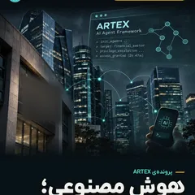
一款用于攻击韩国银行的真实安全测试工具：FBI、CrowdStrike和Check Point已确认的内容、尚未证实的内容，以及该怎么做。
ابزار آزمایش امنیت که در حملهی واقعی به بانکهای کره به کار رفت: آنچه FBI و CrowdStrike تأیید کردهاند، آنچه هنوز ثابت نشده و چه باید کرد.
阅读报道
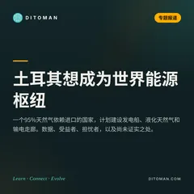
一个95%天然气依赖进口的国家，计划建设发电船、液化天然气和输电走廊。数据、受益者、担忧者，以及尚未证实之处。
کشوری که ۹۵٪ گازش وارداتی است، با نیروگاه شناور، LNG و کریدور برق میخواهد هاب شود. ارقام، برندگان، نگرانیها و آنچه هنوز ثابت نشده.
阅读报道
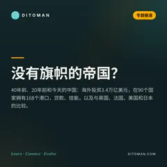
40年前、20年前和今天的中国：海外投资3.4万亿美元，在90个国家拥有168个港口，贷款、技能，以及与英国、法国、美国和日本的比较。
چین ۴۰ سال پیش، ۲۰ سال پیش و امروز: ۳٫۴ تریلیون دلار سرمایهگذاری خارجی، ۱۶۸ بندر در ۹۰ کشور، وام، مهارت و مقایسه با بریتانیا، فرانسه، آمریکا و ژاپن.
阅读报道
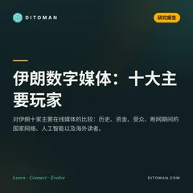
对伊朗十家主要在线媒体的比较：历史、资金、受众、断网期间的国家网络、人工智能以及海外读者。
ده رسانه از نُه زاویه: تاریخچه، پول، مخاطب، شبکهی ملی در روزهای قطع اینترنت، هوش مصنوعی و خوانندهی خارج از ایران.
阅读报道
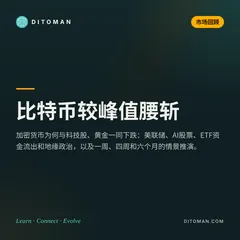
加密货币为何与科技股、黄金一同下跌：美联储、AI股票、ETF资金流出和地缘政治，以及一周、四周和六个月的情景推演。
چرا کریپتو همزمان با سهام فناوری و طلا ریخت؛ با سناریوهای مثبت و منفی برای یک هفته، چهار هفته و شش ماه.
阅读报道
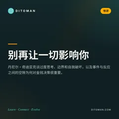
丹尼尔·奇迪亚克谈过度思考、边界和自我破坏，以及事件与反应之间的空隙为何对金钱决策很重要。
کتاب دنیل چیدیاک دربارهی بیشفکری، مرزبندی و خودتخریبی؛ و اینکه چرا فاصلهی بین اتفاق و واکنش در پول هم مهم است.
阅读报道
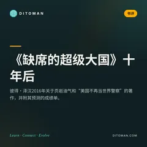
彼得·泽汉2016年关于页岩油气和“美国不再当世界警察”的著作，并附其预测的成绩单。
کتاب پیتر زایهان دربارهی انقلاب شیل و جهانی بدون پلیس آمریکا، با کارنامهی پیشبینیهایش تا امروز.
阅读报道
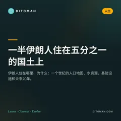
伊朗人住在哪里、为什么：一个世纪的人口地图、水资源、基础设施和未来20年。
مردم ایران کجا زندگی میکنند و چرا: صد سال نقشهی جمعیت، نقش آب، زیرساختها و ۲۰ سال آینده.
阅读报道
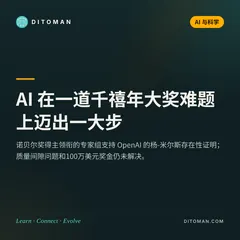
诺贝尔奖得主领衔的专家组支持 OpenAI 的杨-米尔斯存在性证明；质量间隙问题和100万美元奖金仍未解决。
تأیید اثبات هوش مصنوعی برای وجود نظریهی یانگ–میلز؛ شکاف جرمی و جایزهی یک میلیون دلاری هنوز باز است.
阅读报道
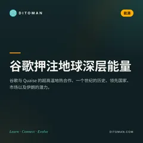
谷歌与 Quaise 的超高温地热合作、一个世纪的历史、领先国家、市场以及伊朗的潜力。
قرارداد گوگل و Quaise، فناوری زمینگرمایی فوقداغ، تاریخچه، بازار و ظرفیت ایران از مشکینشهر تا دماوند.
阅读报道
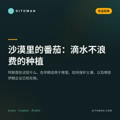
阿联酋在试验什么、在伊朗适用于哪里、如何保护土壤，以及哪些伊朗企业已经在做。
آزمایشهای امارات، کاربرد در مناطق خشک ایران، حفاظت از خاک و شرکتهای ایرانی فعال در کشت هوشمند.
阅读报道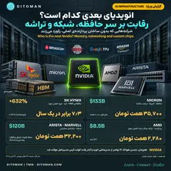
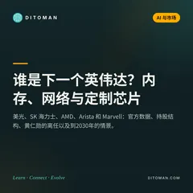
美光、SK 海力士、AMD、Arista 和 Marvell：官方数据、持股结构、黄仁勋的离任以及到2030年的情景。
مایکرون، اسکی هاینیکس، AMD، آریستا و مارول: ارقام رسمی به دلار و تومان، مالکیت، کنارهگیری جنسن هوانگ و سناریوها.
阅读报道
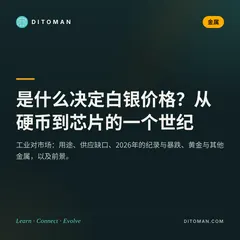
工业对市场：用途、供应缺口、2026年的纪录与暴跌、黄金与其他金属，以及前景。
صنعت در برابر بازار: کاربردها، کسری بازار، رکورد و سقوط ۲۰۲۶، مقایسه با طلا و چشمانداز آینده.
阅读报道
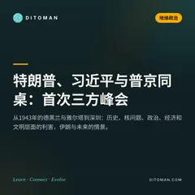
从1943年的德黑兰与雅尔塔到深圳：历史、核问题、政治、经济和文明层面的利害，伊朗与未来的情景。
از تهران ۱۹۴۳ و یالتا تا شنژن: تاریخ، ابعاد هستهای، سیاسی، اقتصادی و تمدنی، جایگاه ایران و سناریوهای پیش رو.
阅读报道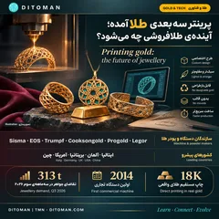
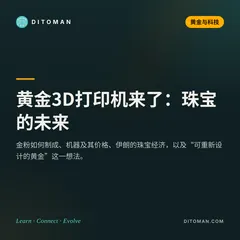
金粉如何制成、机器及其价格、伊朗的珠宝经济，以及“可重新设计的黄金”这一想法。
پودر طلا چطور ساخته میشود، دستگاهها و قیمتها، اقتصاد جواهر در ایران و ایدهی طلای قابلبازطراحی.
阅读报道
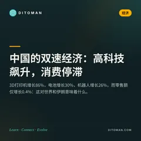
3D打印机增长86%，电池增长30%，机器人增长26%，而零售额仅增长0.4%：这对世界和伊朗意味着什么。
چاپگر سهبعدی ۸۶٪، باتری ۳۰٪، ربات ۲۶٪؛ در حالی که خردهفروشی فقط ۰٫۴٪ رشد کرد.
阅读报道
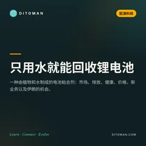
一种由植物和水制成的电池粘合剂：市场、排放、健康、价格、新业务以及伊朗的机会。
چسب باتری از گیاه و آب: بازار، گازهای گلخانهای، سلامت، قیمت، کسبوکارهای تازه و فرصت ایران.
阅读报道
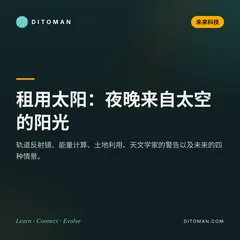
轨道反射镜、能量计算、土地利用、天文学家的警告以及未来的四种情景。
آینههای فضایی، حساب انرژی، کاربری زمین، نگرانی اخترشناسان و چهار سناریو برای آینده.
阅读报道
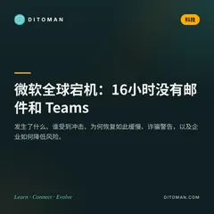
发生了什么、谁受到冲击、为何恢复如此缓慢、诈骗警告，以及企业如何降低风险。
چه اتفاقی افتاد، چه کسانی آسیب دیدند، چرا بازیابی طول کشید، هشدار کلاهبرداری و درسها برای کسبوکارها.
阅读报道
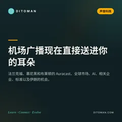
法兰克福、慕尼黑和布莱顿的 Auracast、全球市场、AI、相关企业、标准以及伊朗的机会。
Auracast در فرانکفورت، مونیخ و برایتون، بازار جهانی، هوش مصنوعی، شرکتها، استانداردها و فرصت صنعت صوت ایران.
阅读报道
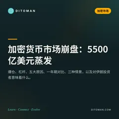
爆仓、杠杆、五大原因、一年期对比、三种情景，以及对伊朗投资者意味着什么。
لیکوئیدیشن و اهرم، پنج دلیل سقوط، مقایسه با یک سال پیش، سه سناریوی آینده و اثر بر سرمایهگذار ایرانی.
阅读报道
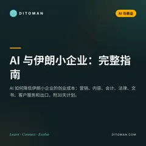
AI 如何降低伊朗小企业的创业成本：营销、内容、会计、法律、文书、客户服务和出口，附30天计划。
هوش مصنوعی در بازاریابی، محتوا، حسابداری، امور حقوقی، مدارک، خدمات مشتری و صادرات؛ با حسابوکتاب واقعی و برنامهی ۳۰ روزه.
阅读报道
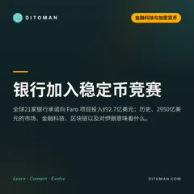
全球21家银行承诺向 Faro 项目投入约2.7亿美元：历史、2950亿美元的市场、金融科技、区块链以及对伊朗意味着什么。
۲۱ بانک بزرگ جهان با حدود ۲۷۰ میلیون دلار وارد بازار استیبلکوین شدند: تاریخچه، بازار ۲۹۵ میلیارد دلاری، فینتک، بلاکچین و معنای آن برای ایران.
阅读报道
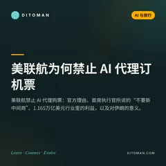
美联航禁止 AI 代理购票：官方理由、首席执行官所说的“不要新中间商”、1.165万亿美元行业里的利益，以及对伊朗的意义。
یونایتد خرید بلیت با هوش مصنوعی را ممنوع کرد: دلایل رسمی، «واسطهی تازه نمیخواهم»، اعداد صنعت ۱٫۱۶۵ تریلیون دلاری و فرصتها برای ایران.
阅读报道
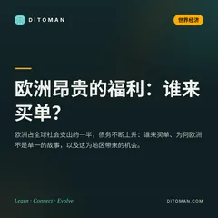
欧洲占全球社会支出的一半，债务不断上升：谁来买单、为何欧洲不是单一的故事，以及这为地区带来的机会。
اروپا نیمی از هزینهی اجتماعی جهان را خرج میکند: چه کسی میپردازد، چرا همهی اروپا یکی نیست و چه فرصتهایی برای منطقه ساخته میشود.
阅读报道
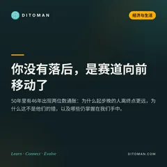
50年里有46年出现两位数通胀：为什么起步晚的人离终点更远，为什么这不是他们的错，以及哪些仍掌握在我们手中。
تورم دو رقمی در ۴۶ سال از ۵۰ سال: چرا دیر رسیدن گران است، چرا تقصیر تو نیست و چه چیزی هنوز در اختیار ماست.
阅读报道
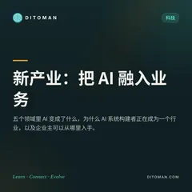
五个领域里 AI 变成了什么，为什么 AI 系统构建者正在成为一个行业，以及企业主可以从哪里入手。
هوش مصنوعی در پنج حوزه چه چیزی را به چه تبدیل میکند و یک تاجر یا کارخانهدار ایرانی از کجا شروع کند.
阅读报道
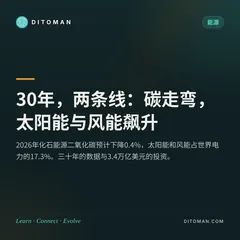
2026年化石能源二氧化碳预计下降0.4%，太阳能和风能占世界电力的17.3%。三十年的数据与3.4万亿美元的投资。
انتشار کربن فسیلی در ۲۰۲۶ کم میشود و خورشید و باد به ۱۷٫۳٪ برق جهان رسیدهاند؛ سی سال داده و ۳٫۴ تریلیون دلار سرمایهگذاری.
阅读报道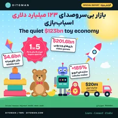
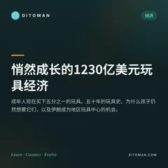
成年人现在买下五分之一的玩具。五十年的玩具史、为什么孩子仍然想要它们，以及伊朗成为地区玩具中心的机会。
بزرگسالها حالا یکپنجم خریداران اسباببازیاند؛ ۵۰ سال تاریخ اسباببازی و فرصت ایران در بازار منطقه.
阅读报道
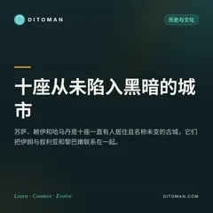
苏萨、赖伊和哈马丹是十座一直有人居住且名称未变的古城，它们把伊朗与叙利亚和黎巴嫩联系在一起。
شوش، ری و همدان در میان ده شهر کهنیاند که هزاران سال مسکونی ماندهاند و نامشان را نگه داشتهاند.
阅读报道
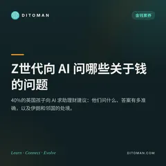
40%的英国孩子向 AI 求助理财建议：他们问什么、答案有多准确，以及伊朗和邻国的处境。
۴۰٪ بچههای بریتانیایی سؤال پولی را از هوش مصنوعی میپرسند: چه میپرسند، جوابها چقدر درست است و ایران و همسایهها کجا هستند.
阅读报道
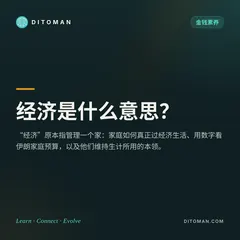
“经济”原本指管理一个家：家庭如何真正过经济生活、用数字看伊朗家庭预算，以及他们维持生计所用的本领。
اقتصاد از اول یعنی ادارهی خانه: دخل و خرج خانوار ایرانی با عدد و مهارتهایی که خانوادهها با آن از پس زندگی برمیآیند.
阅读报道
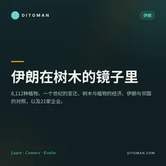
8,112种植物、一个世纪的变迁、树木与植物的经济、伊朗与邻国的对照，以及21家企业。
۸٬۱۱۲ گونهی گیاهی، صد سال تغییر، اقتصاد درخت و گیاه، مقایسه با همسایهها و ۲۱ شرکت.
阅读报道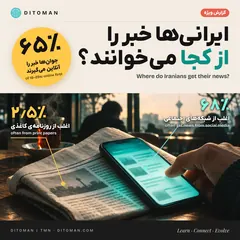
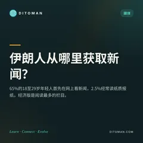
65%的18至29岁年轻人首先在网上看新闻，2.5%经常读纸质报纸，经济版是阅读最多的栏目。
۶۵٪ جوانها خبر را اول آنلاین میگیرند، ۲٫۵٪ اغلب روزنامهی کاغذی میخوانند و اقتصاد پرخوانندهترین صفحه است.
阅读报道
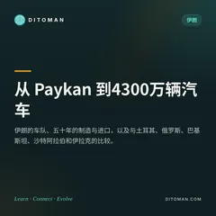
伊朗的车队、五十年的制造与进口，以及与土耳其、俄罗斯、巴基斯坦、沙特阿拉伯和伊拉克的比较。
ناوگان ایران، ۵۰ سال تولید و واردات، و مقایسه با ترکیه، روسیه، پاکستان، عربستان و عراق.
阅读报道
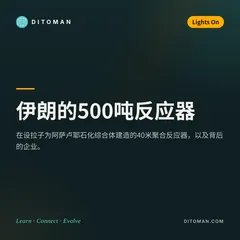
在设拉子为阿萨卢耶石化综合体建造的40米聚合反应器，以及背后的企业。
راکتور پلیمریزاسیون ۴۰ متری ساخت شیراز برای عسلویه، و شرکتهایی که پشت آناند.
阅读报道
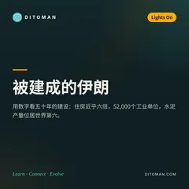
用数字看五十年的建设：住房近乎六倍，52,000个工业单位，水泥产量位居世界第六。
۵۰ سال ساختن با عدد: خانهها نزدیک ۶ برابر، ۵۲ هزار واحد صنعتی، ششمِ جهان در سیمان.
阅读报道
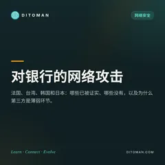
法国、台湾、韩国和日本：哪些已被证实、哪些没有，以及为什么第三方是薄弱环节。
فرانسه، تایوان، کره و ژاپن: چه تأیید شده، چه نه، و چرا شرکتهای همکار حلقهی ضعیفاند.
阅读报道
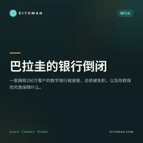
一家拥有290万客户的数字银行被接管，总统被免职，以及存款保险究竟保障什么。
بانکی با ۲٫۹ میلیون مشتری بسته شد و رئیسجمهور برکنار شد؛ ضمانت سپرده واقعاً چه چیزی را پوشش میدهد؟
阅读报道
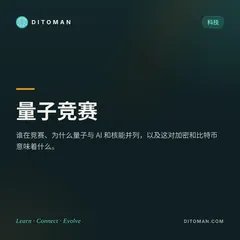
谁在竞赛、为什么量子与 AI 和核能并列，以及这对加密和比特币意味着什么。
چه کشورهایی در این مسابقهاند و چه اثری بر رمزنگاری و بیتکوین دارد.
阅读报道
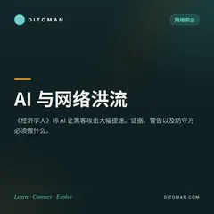
《经济学人》称 AI 让黑客攻击大幅提速。证据、警告以及防守方必须做什么。
شواهد، هشدارها و کاری که مدافعان باید بکنند.
阅读报道
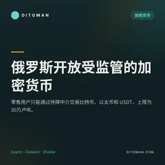
零售用户只能通过持牌中介交易比特币、以太币和 USDT，上限为30万卢布。
سه رمزارز برای مردم عادی، فقط از راه واسطههای مجاز و با سقف سالانه.
阅读报道
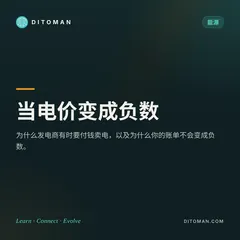
为什么发电商有时要付钱卖电，以及为什么你的账单不会变成负数。
چرا تولیدکننده برای فروش برق پول میدهد و چرا قبض تو منفی نمیشود.
阅读报道
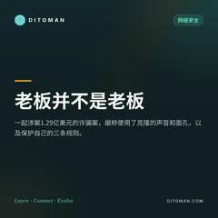
一起涉案1.29亿美元的诈骗案，据称使用了克隆的声音和面孔，以及保护自己的三条规则。
پروندهی ۱۲۹ میلیون دلاری با جعل صدا و تصویر، و سه قانون ساده برای محافظت.
阅读报道
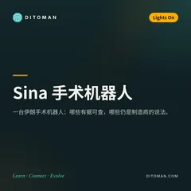
一台伊朗手术机器人：哪些有据可查，哪些仍是制造商的说法。
از دانشگاه تا اتاق عمل؛ آنچه مستند است و آنچه هنوز ادعای سازنده است.
阅读报道
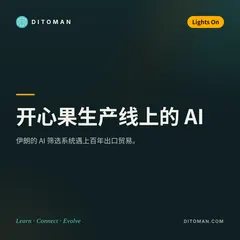
伊朗的 AI 筛选系统遇上百年出口贸易。
سامانهی هوشمند غربالگری آفلاتوکسین و جایگاه پستهی ایران در جهان.
阅读报道外出的花费比通胀多涨了20%，而免费聚会也减少了。
گرانی تنها مقصر نیست؛ حتی دورهمی رایگان هم کم شد.
阅读报道
亚兹德的一处矿床，锌储量几乎相当于整个秘鲁的储量。
ذخیرهای در دل کویر یزد، هماندازهی ذخایر روی کشور پرو.
阅读报道
伊朗制造的环氧乙烷催化剂，如今让 Morvarid 石化的乙二醇装置满负荷运转。
کاتالیست ایرانی EO، واحد گلایکول پتروشیمی مروارید را با ظرفیت کامل میچرخاند.
阅读报道
CinnaGen 如何为 Zandoriah 获得欧盟上市许可。
داستان مجوز اروپایی داروی زاندوریا، ساخت سیناژن.
阅读报道
它能做什么、谁能使用，以及伊朗人可以从中学到什么。
چه میکند، چه کسانی از آن استفاده میکنند و چه درسی برای ما دارد.
阅读报道۳۰ درس کوتاه و دوزبانه، قدمبهقدم: از پول و تورم تا بانک، بلاکچین و هوش مصنوعی.30节简短的双语课程，循序渐进：从货币与通胀，到银行、区块链和人工智能。
三个领域共用一条永久的编辑规则：真实的知识与真实的成就，不做任何一方的政治评论。
区块链如何运作、碰代币之前如何检查它，以及如何防范诈骗。
对即将到来的变化做坦诚的分析，从我们的读者真正所处的位置出发。
记录伊朗人民和企业所建成的一切，每个数字都有来源。
一幅有结构的地图，涵盖伊朗制造、开采、运输和所见的一切：六大分支、官方子分支、领先企业，每个数字都有来源。
历史、产品、领导层和数字，按行业逐一介绍，每个数字都有来源。
面向波斯语用户的安卓应用商店；50万+应用
فروشگاه برنامهی اندروید برای فارسیزبانان؛ بیش از ۵۰۰ هزار برنامه
查看档案生物类似药、实验室试剂与重组蛋白
داروهای زیستیمشابه، معرفهای آزمایشگاهی و پروتئینهای نوترکیب
查看档案伊朗电商；始于2006年
بزرگترین فروشگاه اینترنتی ایران؛ از ۲۰۰۶
查看档案ASIC、SoC 和 FPGA 设计；32位 Aristo 微处理器
طراحی تراشهی ASIC، SoC و FPGA؛ ریزپردازندهی ۳۲ بیتی آریستو
查看档案Sina 机器人手术系统
سامانهی جراحی رباتیک سینا
查看档案固定价格的网约车；2014年2月上线
درخواست خودرو؛ قیمت از پیش مشخص؛ آغاز فوریهی ۲۰۱۴
查看档案牛皮纸与半牛皮纸、瓦楞纸板与纸箱、纸板；亚兹德工业城
کاغذ کرافت و سمیکرافت، ورق و کارتن کنگرهای، مقوا؛ شهرک صنعتی یزد
查看档案
伊朗最大的乙烯与聚乙烯生产商之一，位于阿萨卢耶，出口占产量70%以上
یکی از بزرگترین تولیدکنندگان اتیلن و پلیاتیلن ایران در عسلویه؛ بیش از ۷۰٪ محصول برای صادرات
查看档案覆膜 MDF 板与型材、PVC 墙板、人造石、天花板；吉兰省安扎利自由区
ورق و پروفیل امدیاف روکشدار، دیوارپوش پیویسی، سنگ مصنوعی و تایل سقفی؛ منطقه آزاد انزلی، گیلان
查看档案草药、化妆品、食品与精油；伊斯法罕省卡尚（工厂靠近加姆萨尔）
داروی گیاهی، آرایشی و غذایی بر پایهی گیاهان دارویی؛ اسانس؛ کاشان، اصفهان (کارخانه نزدیک قمصر)
查看档案纸浆与纸张；吉兰省
خمیر کاغذ و کاغذ؛ گیلان
查看档案玫瑰水、草药蒸馏液、天然糖浆与干草药；卡尚 Amirkabir 1 工业城
گلاب، عرقیات گیاهی، شربت طبیعی و گیاهان دارویی خشک؛ شهرک صنعتی امیرکبیر ۱، کاشان
查看档案«بیسوادان قرن بیستویکم کسانی نیستند که نمیتوانند بخوانند؛ کسانیاند که نمیتوانند یاد بگیرند، از یاد ببرند و دوباره یاد بگیرند.»
“21世纪的文盲，不是不会读写的人，而是不能学习、摒弃旧观念并重新学习的人。”
Ditoman 的名字来自 Toman（土曼），伊朗货币的日常名称：一种“数字土曼”。TMN 于2022年2月部署在 BNB Smart Chain 上，背后只有一个问题：知识本身能否承载真实的价值？
近四年里，我们刻意保持安静。没有营销，没有代币出售，没有发布会。这段历史记录在链上，任何人都可以查证，也最清楚地说明这个项目从来不是为了一时的炒作。
按主题划分的简短课程，每节约五分钟，提供两种语言，每节都以测验结束。
课程、简短的新闻解读与动态，提供波斯语和英语。没有信号，没有炒作。
TMN 是 Ditoman 背后的 BEP-20 代币，计划用于认可真实的学习与贡献。它不是投资产品，我们也不要求任何人购买。
有几种互不相关的代币使用 TMN 这个代号。这是唯一的官方合约：
0x86a56e59f22Eaf3867EEeB41fB9BfA81BacE790d
نقطهضعفها را هم مینویسیم، چون درس بررسی توکن یاد میدهد دنبالشان بگردی.
按阶段，而非日期。我们诚实汇报进展，包括没有成功的部分。
合约已验证，所有权已放弃，约20%的供应量退出流通，双语课程已发布，白皮书定稿。
一个有真实规则、有预置课程和清晰引导的 Telegram 社区，在任何邀请之前先建好。
2026年10月29日： 项目主钱包中全部 TMN/BNB 流动性已锁定至2027年10月29日。 验证锁定 · 这意味着什么
۷ آبان ۱۴۰۵: همهی لیکوئیدیتی TMN/BNB کیفپول اصلی پروژه تا ۷ آبان ۱۴۰۶ قفل شد.
加入波斯语加密货币和侨民社区，以及首次带有证明的公开供应量移除。
阅读十节课程，通过十道题的测试，前1000名参与者可获得500,000 TMN。 从这里开始.
ده درس را بخوان، در آزمون دهسؤالی قبول شو و ۵۰۰٬۰۰۰ TMN بگیر؛ برای ۱٬۰۰۰ نفر اول. از اینجا شروع کن.
一个双语教育项目，围绕三大支柱：实用的加密货币与金融素养，对 AI、能源与未来工作的坦诚分析，以及报道伊朗人民和企业的真实成就。
از کسی نمیخواهیم بخرد. عرضهی TMN متمرکز است. صفحهی TMN را بخوان و با همان معیارهایی بسنجش که هر توکن دیگری را میسنجی.
不是。Ditoman 是一个教育项目。这里的任何内容都不构成投资建议，课程旨在帮助你自己做决定。
这是一条永久的编辑规则。我们记录真实的知识与真实的成就，不做任何一方的政治评论。
会。边学边赚试点已开放：阅读十节课程，通过十道题的测试，前1000名参与者可获得500,000 TMN。 从这里开始.
بله. طرح «یاد بگیر، توکن بگیر» باز است: ده درس را بخوان، در آزمون دهسؤالی قبول شو و ۵۰۰٬۰۰۰ TMN بگیر؛ برای ۱٬۰۰۰ نفر اول. از اینجا شروع کن.
一份文件确定方向。在相信我们说的任何话之前，请先读它。
گزارشها، آموزشها و روایتهای امیدبخش، هر روز در کانالهای دیتومان.